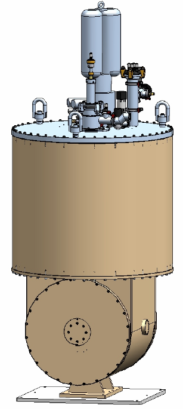

Scientific Magnetics 2T 3D Vector Magnet
The system comprises:
Temperature controllers (optional Lakeshore 336)
Temperature monitor (Cryocon 14, Ethernet device)
3 power supplies (one for each axis)
Helium level gauge
Rotation stage (controlled separately by a Galil axis)
Motorised needle valve (controlled by Galil analogue output, or Thurlby-Thandar EX355P benchtop PSU)
Large log files
See here for mitigations - this is a known LabVIEW issue/bug.
VI
There is a manufacturer supplied VI and our own LVDCOM IOC. There are two versions of the manufacturer’s VI and both are stored in SourceSafe at the following location: \LabVIEW Modules\Drivers\Scientific Instruments\3D Magnet\Source Code\. One VI has been used on LARMOR and ZOOM and uses the TTi PSU for needle valve control, and the other on POLREF when an analogue output from the Galil was used. See below for more information.
The settings for the manufacturer VI are stored (and can be edited) in the plain text file: settings.txt. The COM ports are defined in the first section of the file, but it shouldn’t be necessary to change these.
Ethernet Switch
The magnet control rack has a small Ethernet switch inside to provide network access to the Lakeshore 336 and MOXA (see below). This will need to be connected to the ISIS network to enable remote control of the magnet.
MOXA NPort
The rack has its own dedicated MOXA NPort 5616 due to the number of devices it uses. When the system is moved between instruments, this MOXA is added to the NPort configuration on the local control machine and its ports assigned to COM101-COM116 (so as not to interfere with common equipment). The control machine IP address should be added to the “accessible IPs list” of the MOXA via the administration webpage (and subsequently removed when the magnet is finished with). Currently, the settings of the dedicated MOXA are:
IP address : DHCP reserved and visible on front screen when connected to ISIS network
Port 1 / COM101 : SMC X PSU
Port 2 / COM102 : SMC Y PSU
Port 3 / COM103 : SMC Z PSU
Port 4 / COM104 : Cryocon 32 temperature controller
Port 5 / COM105 : Helium level meter
Port 6 / COM106 : TTi EX355P PSU (when required for needle valve control)
Rotation Stage
Standard unit controlled by a Galil axis. Details:
+- 370 degrees
Motor with encoder
No limit switches - Do not rotate more than 360 degrees too many times or cables will be damaged.
Home position defined by an index pulse on the encoder
When this magnet was last installed on ZOOM, one of the slit axes was used for the rotation stage as there are no spare cables in the sample area. A batch file exists in the configurations\galil directory of the settings area to set the required PV values for the axis (edit if different axis is used), and a corresponding batch file in the user\users\ZOOM directory of the ‘U-drive’ will reinstate the settings for the slit axis when the magnet rotation stage is removed.
NB There are plans to install additional cabling into the ZOOM sample area to connect extra motion stages, so this borrowing of an axis may not be needed any longer. Check before altering PV values.
Needle Valve
This is a motorised valve. Historically this has been controlled via an analogue output from a Galil on POLREF and a Thurlby-Thandar Instruments EX355P benchtop PSU on LARMOR and ZOOM. There are two front panel VIs for this purpose, one for each scenario: Vector-control-v16isis.vi for the TTi-EX355P controlled valve and Vector-control-v16isis-Galil-Valve.vi for analogue output controlled valve. Both are in the SourceSafe location mentioned above: \LabVIEW Modules\Drivers\Scientific Instruments\3D Magnet\Source Code\.
If the PSU is to be used, first it will need to be configured via its own setup VI located in \LabVIEW Modules\Drivers\Thurlby EX355P\TH EX355P - System Functions.llb\TH EX355P - Setup Dialog.vi, with the port from the settings.txt file mentioned above. It will then be possible to check the communication to the PSU via its own front panel VI here: \LabVIEW Modules\Drivers\Thurlby EX355P\TH EX355P - System Functions.llb\TH EX355P - Front Panel 1.vi. This VI and the main magnet VI cannot be run simultaneously.
Lakeshore 336 Temperature Controller
The Lakeshore 336 is an Ethernet device and should therefore be connected to the switch in the magnet control rack. Its hostname can be found in a settings menu accessed from the front panel. Communications can be checked by pinging the hostname, or more thoroughly by configuring its VI or IOC/OPI.
Miscellaneous Information
The system takes approximately 3 days to reach base temperature
Schematic of system
